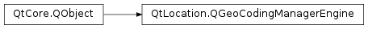

QGeoCodingManagerEngine¶
Synopsis¶
Functions¶
- def
locale() - def
managerName() - def
managerVersion() - def
setLocale(locale)
Virtual functions¶
- def
geocode(address, bounds) - def
geocode(address, limit, offset, bounds) - def
reverseGeocode(coordinate, bounds)
Detailed Description¶
The
PySide2.QtLocation.QGeoCodingManagerEngineclass provides an interface and convenience methods to implementers ofPySide2.QtLocation.QGeoServiceProviderplugins who want to provide support for geocoding operations.In the default implementation, supportsGeocoding() and supportsReverseGeocoding() returns false while
PySide2.QtLocation.QGeoCodingManagerEngine.geocode()andPySide2.QtLocation.QGeoCodingManagerEngine.reverseGeocode()causeQGeoCodeReply.UnsupportedOptionErrorto occur.If the service provider supports geocoding the subclass should provide an implementation of
PySide2.QtLocation.QGeoCodingManagerEngine.geocode()and call setSupportsGeocoding(true) at some point in time beforePySide2.QtLocation.QGeoCodingManagerEngine.geocode()is called.Similarly, if the service provider supports reverse geocoding the subclass should provide an implementation
PySide2.QtLocation.QGeoCodingManagerEngine.reverseGeocode()and call setSupportsReverseGeocoding(true) at some point in time beforePySide2.QtLocation.QGeoCodingManagerEngine.reverseGeocode()is called.A subclass of
PySide2.QtLocation.QGeoCodingManagerEnginewill often make use of a subclass foPySide2.QtLocation.QGeoCodeReplyinternally, in order to add any engine-specific data (such as aPySide2.QtNetwork.QNetworkReplyobject for network-based services) to thePySide2.QtLocation.QGeoCodeReplyinstances used by the engine.See also
PySide2.QtLocation.QGeoCodingManager
-
class
PySide2.QtLocation.QGeoCodingManagerEngine(parameters[, parent=nullptr])¶ Parameters: - parameters –
PySide2.QtCore.QVariantMap - parent –
PySide2.QtCore.QObject
Constructs a new engine with the specified
parent, usingparametersto pass any implementation specific data to the engine.- parameters –
-
PySide2.QtLocation.QGeoCodingManagerEngine.error(reply, error[, errorString=""])¶ Parameters: - reply –
PySide2.QtLocation.QGeoCodeReply - error –
PySide2.QtLocation.QGeoCodeReply.Error - errorString – unicode
- reply –
-
PySide2.QtLocation.QGeoCodingManagerEngine.finished(reply)¶ Parameters: reply – PySide2.QtLocation.QGeoCodeReply
-
PySide2.QtLocation.QGeoCodingManagerEngine.geocode(address, bounds)¶ Parameters: - address –
PySide2.QtPositioning.QGeoAddress - bounds –
PySide2.QtPositioning.QGeoShape
Return type: Begins the geocoding of
address. Geocoding is the process of finding a coordinate that corresponds to a given address.A
PySide2.QtLocation.QGeoCodeReplyobject will be returned, which can be used to manage the geocoding operation and to return the results of the operation.This engine and the returned
PySide2.QtLocation.QGeoCodeReplyobject will emit signals indicating if the operation completes or if errors occur.If supportsGeocoding() returns false an
QGeoCodeReply.UnsupportedOptionErrorwill occur.Once the operation has completed,
QGeoCodeReply.locations()can be used to retrieve the results, which will consist of a list ofPySide2.QtPositioning.QGeoLocationobjects. These objects represent a combination of coordinate and address data.The address data returned in the results may be different from
address. This will usually occur if the geocoding service backend uses a different canonical form of addresses or ifaddresswas only partially filled out.If
boundsis non-null and a validPySide2.QtPositioning.QGeoShapeit will be used to limit the results to those that are contained bybounds. This is particularly useful ifaddressis only partially filled out, as the service will attempt to geocode all matches for the specified data.The user is responsible for deleting the returned reply object, although this can be done in the slot connected to
QGeoCodingManagerEngine.finished(),QGeoCodingManagerEngine.error(),QGeoCodeReply.finished()orQGeoCodeReply.error()withPySide2.QtCore.QObject.deleteLater().- address –
-
PySide2.QtLocation.QGeoCodingManagerEngine.geocode(address, limit, offset, bounds) Parameters: - address – unicode
- limit –
PySide2.QtCore.int - offset –
PySide2.QtCore.int - bounds –
PySide2.QtPositioning.QGeoShape
Return type: Begins geocoding for a location matching
address.A
PySide2.QtLocation.QGeoCodeReplyobject will be returned, which can be used to manage the geocoding operation and to return the results of the operation.This engine and the returned
PySide2.QtLocation.QGeoCodeReplyobject will emit signals indicating if the operation completes or if errors occur.Once the operation has completed,
QGeoCodeReply.locations()can be used to retrieve the results, which will consist of a list ofPySide2.QtPositioning.QGeoLocationobjects. These objects represent a combination of coordinate and address data.If
limitis -1 the entire result set will be returned, otherwise at mostlimitresults will be returned.The
offsetparameter is used to ask the geocoding service to not return the firstoffsetresults.The
limitandoffsetresults are used together to implement paging.If
boundsis non-null and a validPySide2.QtPositioning.QGeoShapeit will be used to limit the results to those that are contained bybounds.The user is responsible for deleting the returned reply object, although this can be done in the slot connected to
QGeoCodingManagerEngine.finished(),QGeoCodingManagerEngine.error(),QGeoCodeReply.finished()orQGeoCodeReply.error()withPySide2.QtCore.QObject.deleteLater().
-
PySide2.QtLocation.QGeoCodingManagerEngine.locale()¶ Return type: PySide2.QtCore.QLocaleReturns the locale used to hint to this geocoding manager about what language to use for the results.
-
PySide2.QtLocation.QGeoCodingManagerEngine.managerName()¶ Return type: unicode Returns the name which this engine implementation uses to distinguish itself from the implementations provided by other plugins.
The combination of and
PySide2.QtLocation.QGeoCodingManagerEngine.managerVersion()should be unique amongst plugin implementations.
-
PySide2.QtLocation.QGeoCodingManagerEngine.managerVersion()¶ Return type: PySide2.QtCore.intReturns the version of this engine implementation.
The combination of
PySide2.QtLocation.QGeoCodingManagerEngine.managerName()and should be unique amongst plugin implementations.
-
PySide2.QtLocation.QGeoCodingManagerEngine.reverseGeocode(coordinate, bounds)¶ Parameters: - coordinate –
PySide2.QtPositioning.QGeoCoordinate - bounds –
PySide2.QtPositioning.QGeoShape
Return type: Begins the reverse geocoding of
coordinate. Reverse geocoding is the process of finding an address that corresponds to a given coordinate.A
PySide2.QtLocation.QGeoCodeReplyobject will be returned, which can be used to manage the reverse geocoding operation and to return the results of the operation.This engine and the returned
PySide2.QtLocation.QGeoCodeReplyobject will emit signals indicating if the operation completes or if errors occur.If supportsReverseGeocoding() returns false an
QGeoCodeReply.UnsupportedOptionErrorwill occur.At that point
QGeoCodeReply.locations()can be used to retrieve the results, which will consist of a list ofPySide2.QtPositioning.QGeoLocationobjects. These objects represent a combination of coordinate and address data.The coordinate data returned in the results may be different from
coordinate. This will usually occur if the reverse geocoding service backend shifts the coordinates to be closer to the matching addresses, or if the backend returns results at multiple levels of detail.If multiple results are returned by the reverse geocoding service backend they will be provided in order of specificity. This normally occurs if the backend is configured to reverse geocode across multiple levels of detail. As an example, some services will return address and coordinate pairs for the street address, the city, the state and the country.
If
boundsis non-null and a validPySide2.QtPositioning.QGeoShapeit will be used to limit the results to those that are contained bybounds.The user is responsible for deleting the returned reply object, although this can be done in the slot connected to
QGeoCodingManagerEngine.finished(),QGeoCodingManagerEngine.error(),QGeoCodeReply.finished()orQGeoCodeReply.error()withPySide2.QtCore.QObject.deleteLater().- coordinate –
-
PySide2.QtLocation.QGeoCodingManagerEngine.setLocale(locale)¶ Parameters: locale – PySide2.QtCore.QLocaleSets the locale to be used by this manager to
locale.If this geocoding manager supports returning the results in different languages, they will be returned in the language of
locale.The locale used defaults to the system locale if this is not set.
© 2018 The Qt Company Ltd. Documentation contributions included herein are the copyrights of their respective owners. The documentation provided herein is licensed under the terms of the GNU Free Documentation License version 1.3 as published by the Free Software Foundation. Qt and respective logos are trademarks of The Qt Company Ltd. in Finland and/or other countries worldwide. All other trademarks are property of their respective owners.